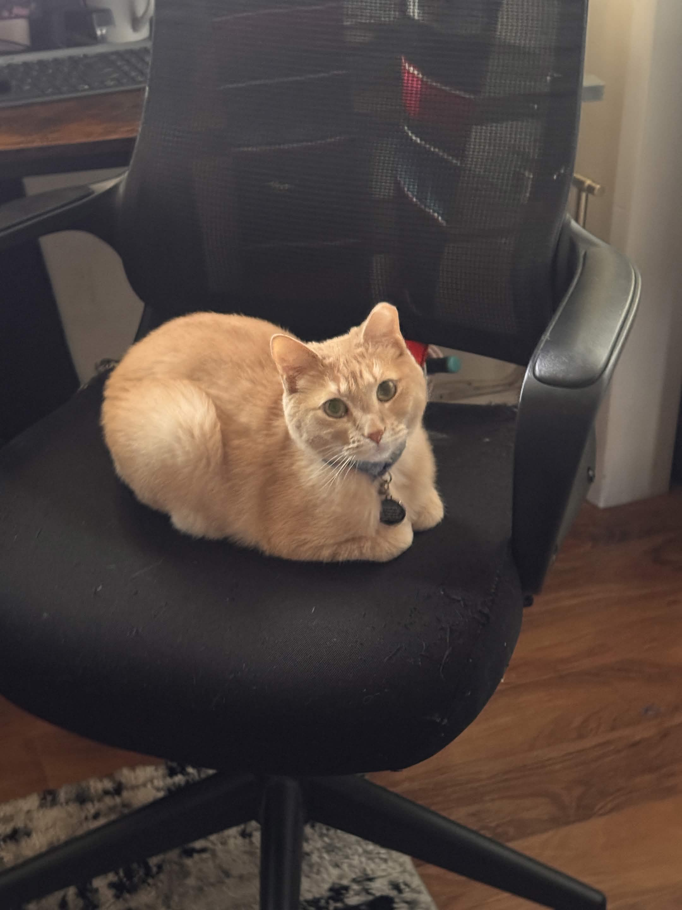

Timmy is a four-year-old blonde tabby cat. In December 2021, a friend asked my sister to babysit him while she moved, but later she told us she didn't want him anymore, so we kept him. Tim is a timid, scaredy-cat who hates strangers and anything strange. Often, he hides under beds or in closets so he isn't noticed. But with those he is comfortable with, he is cuddly and loves being petted under his chin and on top of his head. For unknown reasons, at night his persona flips, and he becomes confident and outgoing, usually leading to play-fighting with his roomie Bean.
His intrests consists of sitting on heat, chewing plastic and fighting .
Specialty: Hide and Go Seek